Тема 1.3: Законы сохранения
Импульс тела, закон сохранения импульса, работа и энергия • 4 академических часа
1. Импульс тела (количество движения)
Импульс тела (p) — это векторная физическая величина, равная произведению массы тела на его скорость. Характеризует способность тела передавать движение другим телам при взаимодействии.
Свойства импульса:
- Импульс — векторная величина. Его направление всегда совпадает с направлением скорости тела.
- Если тело покоится (v = 0), его импульс равен нулю.
- Проекция импульса на ось OX: px = m · vx.
Векторы импульса и скорости
Вектор импульса всегда сонаправлен вектору скорости
2. Второй закон Ньютона в импульсной форме
Второй закон Ньютона можно записать через изменение импульса. Сила, действующая на тело, равна скорости изменения его импульса.
Импульс силы (F·Δt) — это мера воздействия силы за определённый промежуток времени. Именно импульс силы вызывает изменение импульса тела.
Пример: При ударе важно не только значение силы, но и время её действия. Подушка (или согнутые колени при приземлении) увеличивает время Δt, тем самым снижая силу удара F.
3. Закон сохранения импульса (ЗСИ)
Замкнутая система тел — это система, на которую не действуют внешние силы, или их действие скомпенсировано.
Закон сохранения импульса: Векторная сумма импульсов тел, составляющих замкнутую систему, остаётся постоянной при любых взаимодействиях тел этой системы между собой.
Столкновение двух тел (пример ЗСИ)
4. Реактивное движение
Реактивное движение — это движение тела, возникающее при отделении от него с какой-либо скоростью некоторой его части.
В основе реактивного движения лежит закон сохранения импульса. Если из ракеты массой M со скоростью v вылетает газ массой m со скоростью u, то сама ракета приобретает скорость V, направленную в противоположную сторону:
Примеры: движение ракет, реактивных самолетов, каракатиц и осьминогов (выбрасывание воды).
5. Механическая работа
Механическая работа (A) — это физическая величина, которая показывает, какая энергия была затрачена на перемещение тела. Измеряется в джоулях (Дж).
Если при прямолинейном движении на тело действует неизменная сила под углом к направлению движения, работа вычисляется по формуле:
Частные случаи:
- Если сила совпадает с направлением движения (α = 0), то A = F · l.
- Если сила направлена вертикально вверх (например, подъем груза), то A = m · g · h.
- Если сила направлена против движения (α = 180°), работа отрицательна (например, работа силы трения: A = -F · l).
6. Работа силы тяжести. Консервативные силы
Работа силы тяжести зависит только от начального и конечного положения тела (от начальной и конечной высоты), но не зависит от формы траектории.
- Если тело падает вниз (h1 > h2), работа положительна (A > 0).
- Если тело поднимается вверх (h1 < h2), работа отрицательна (A < 0).
- Если тело движется по горизонтали (h1 = h2), работа равна нулю (A = 0).
Консервативные силы — это силы, работа которых не зависит от формы траектории и по замкнутой траектории равна нулю. Сила тяжести — консервативная сила.
7. Работа силы упругости
Работу силы упругости можно определить только при упругой деформации. Она также не зависит от формы траектории и определяется начальным и конечным удлинением пружины.
Сила упругости является консервативной силой.
8. Работа силы трения
Сила трения всегда действует противоположно направлению движения. Угол между вектором перемещения и вектором силы трения равен 180°, поэтому работа силы трения всегда отрицательна.
Силы трения не консервативны. На замкнутом пути их работа меньше нуля, так как часть механической энергии переходит в тепло.
9. Мощность и КПД
Мощность (N) — это скорость выполнения работы. Она показывает, какая работа совершается за единицу времени.
Мощность также можно рассчитать через силу и скорость:
Коэффициент полезного действия (КПД) обозначается греческой буквой η (эта). Он показывает, насколько эффективно используется подведённая энергия.
КПД всегда меньше 1 или 100% (η < 100%), так как часть энергии уходит на нагрев и трение.
🩺 Связь с медициной
- Травматология и удар: При падении или ударе важно вовремя сгруппироваться. Увеличение времени взаимодействия (Δt) за счет амортизации (мышцы, хрящи) снижает силу удара (F = Δp / Δt).
- Баллистокардиография: Метод исследования сердечной деятельности, основанный на регистрации перемещений тела человека (реактивное движение).
- Инъекции: При уколе шприцем поршень передает импульс жидкости. Отдача (реакция) минимальна, так как масса шприца велика.
- Работа мышц: При подъеме тяжестей мышцы совершают работу против силы тяжести (A = mgh). При удержании груза работа не совершается (нет перемещения).
- Мощность и КПД организма: КПД мышц человека составляет около 20-25%. Остальная энергия рассеивается в виде тепла. Именно поэтому при физической нагрузке мы потеем.
🧪 Быстрый опыт: Мощность
Ход: Поднимите груз массой 1 кг на высоту 1 метр за 1 секунду, затем за 5 секунд. Совершенная работа будет одинаковой (A = mgh = 10 Дж), но мощность во втором случае будет в 5 раз меньше, так как время больше.
🎯 Шпаргалка для Практической работы №3
1. Закон сохранения импульса (абсолютно неупругий удар):
Тела после столкновения движутся вместе: m₁v₁ + m₂v₂ = (m₁ + m₂)v'.
2. Абсолютно упругий удар:
Шары разлетаются с разными скоростями: m₁v₁ + m₂v₂ = m₁v₁' + m₂v₂'.
3. Импульс силы:
F·Δt = Δp. Отсюда можно найти среднюю силу удара или время торможения.
4. Работа:
A = F · l · cosα. Если α=0 (сила по движению), A = F·l. Если α=180 (трение), A = -F·l. Подъем груза: A = mgh.
5. Работа силы тяжести и упругости (консервативные):
Aтяж = mg(h₁ - h₂); Aупр = kx₁²/2 - kx₂²/2.
6. Мощность и КПД:
N = A / t или N = F · v. η = Aпол / Aзатр · 100%.
📝 Примеры решения типовых задач
Пример 1 (Импульс тела): Найдите импульс автомобиля массой 2 т, движущегося со скоростью 72 км/ч.
Решение: Переведем массу в кг: 2 т = 2000 кг. Скорость в м/с: 72 / 3,6 = 20 м/с.
p = m·v = 2000 кг · 20 м/с = 40 000 кг·м/с.
Пример 2 (ЗСИ): Тележка массой 20 кг движется со скоростью 2 м/с. Навстречу ей едет тележка массой 30 кг со скоростью 1 м/с. После сцепки они движутся вместе. Найдите их скорость.
Решение: m₁v₁ - m₂v₂ = (m₁ + m₂)v' (т.к. движутся навстречу).
20·2 - 30·1 = (20 + 30) · v'
40 - 30 = 50 · v'
10 = 50 · v' ⇒ v' = 0,2 м/с. (направление совпадает с первой тележкой).
Пример 3 (Мощность): Рабочий поднимает ящик массой 20 кг на высоту 1,5 м за 3 секунды. Какую мощность он при этом развивает? (g = 10 м/с²).
Решение: Сначала найдем работу: A = m·g·h = 20 кг · 10 м/с² · 1,5 м = 300 Дж.
Затем мощность: N = A / t = 300 Дж / 3 с = 100 Вт.
Подробная теория (для самостоятельного изучения)
1. Импульс тела
Импульс... Понятие, довольно часто используемое в физике. Что понимают под этим термином?
Простой обыватель скажет тебе, что импульс — это определённое воздействие (толчок или удар), оказываемое на тело, благодаря чему оно получает возможность двигаться в заданном направлении.
В толковом словаре Ожегова ты прочитаешь, что импульс — это побудительный момент, толчок, вызывающий какое-нибудь действие.
Импульсом тела p (количеством движения) называется векторная физическая величина, модуль которой равен произведению массы тела на его скорость.
Таким образом, импульс тела — это характеристика движения тела, которая напрямую зависит от его массы и скорости. Чем больше масса и/или скорость движения тела, тем больше его импульс, а значит, тем большее воздействие тело способно оказать на другие тела при взаимодействии с ними. В состоянии покоя скорость равна нулю, следовательно, и величина импульса равна нулю.

💡 Обрати внимание!
Импульс имеет направление скорости движущегося тела. Векторы скорости и импульса тела сонаправлены.
Единицей измерения импульса тела, движущегося со скоростью 1 м/с, имеющего массу 1 кг, считают 1 кг · м/с. [p] = 1 кг·м/с.
Если проекция вектора скорости на ось Ох положительна, то и проекция вектора импульса на ось Ох положительна. Если проекция скорости отрицательна, то и проекция импульса отрицательна.
При взаимодействии тел их импульсы могут изменяться.
2. Импульс материальной точки и системы точек. Импульс силы и его изменение
Импульс материальной точки:
Полный (суммарный) импульс системы материальных точек равен векторной сумме импульсов отдельных частиц системы:
Второй закон Ньютона в импульсной форме: изменение импульса тела равно импульсу действующей на него силы.
3. Закон сохранения импульса
Рассмотрим изменение импульсов тел при их взаимодействии друг с другом. Если два или несколько тел взаимодействуют только между собой (то есть не подвергаются воздействию внешних сил), то эти тела образуют замкнутую систему.
Импульс, равный векторной сумме импульсов тел, входящих в замкнутую систему, называется суммарным импульсом этой системы.
Закон сохранения импульса: Суммарный импульс системы тел до взаимодействия равен суммарному импульсу этой системы тел после взаимодействия.
В этом заключается закон сохранения импульса, который называют также законом сохранения количества движения. Впервые он был сформулирован Р. Декартом. В одном из своих писем он написал:
«Я принимаю, что во Вселенной, во всей созданной материи есть известное количество движения, которое никогда не увеличивается, не уменьшается, и, таким образом, если одно тело приводит в движение другое, то теряет столько своего движения, сколько его сообщает».
Для примера возьмем систему из двух тел: шары массами m₁ и m₂ равномерно и прямолинейно движутся со скоростями v₁ и v₂, причем их скорости противоположно направлены, то есть шары движутся навстречу друг другу.
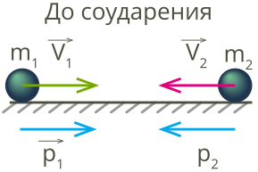
Когда шары приблизятся друг к другу, произойдет столкновение. Удар не будет мгновенным, он займёт пусть малое, но вполне измеримое время t, при этом появятся силы взаимодействия F₁ и F₂, которые будут приложены к первому и второму шарам соответственно. Под действием силы скорость тела меняется, поэтому изменятся и скорости шаров. После столкновения модули и направления скоростей могут быть совершенно иными, поэтому обозначим скорости v₁' и v₂' соответственно.
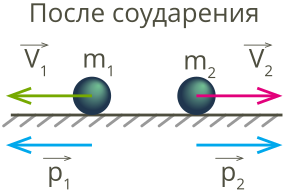
Тогда, согласно закону сохранения импульса, имеют место равенства:
Данные равенства являются математической записью закона сохранения импульса.
Закон сохранения импульса выполняется и в том случае, если на тела системы действуют внешние силы, векторная сумма которых равна нулю. Таким образом, более точно закон сохранения импульса формулируется так: векторная сумма импульсов всех тел замкнутой системы — величина постоянная, если внешние силы, действующие на неё, отсутствуют или же их векторная сумма равна нулю.
Импульс системы тел может измениться только в результате действия на систему внешних сил. И тогда закон сохранения импульса действовать не будет.
💡 Обрати внимание!
В природе замкнутых систем не существует. Но если время действия внешних сил очень мало, например, во время взрыва, выстрела и т. п., то в этом случае воздействием внешних сил на систему пренебрегают, а саму систему рассматривают как замкнутую.
Кроме того, если на систему действуют внешние силы, но сумма их проекций на одну из координатных осей равна нулю (то есть силы уравновешены в направлении этой оси), то в этом направлении закон сохранения импульса выполняется.
Пример: выстрел из пушки
При стрельбе из пушки возникает отдача: снаряд летит вперёд, а само орудие откатывается назад. Почему?

Снаряд и пушка — замкнутая система, в которой действует закон сохранения импульса. В результате выстрела из пушки импульс самой пушки и импульс снаряда изменятся. Но сумма импульсов пушки и находящегося в ней снаряда до выстрела останется равной сумме импульсов откатывающейся пушки и летящего снаряда после выстрела.
Маятник Ньютона (колыбель Ньютона)
Великий учёный Исаак Ньютон изобрёл наглядную демонстрацию закона сохранения импульса.
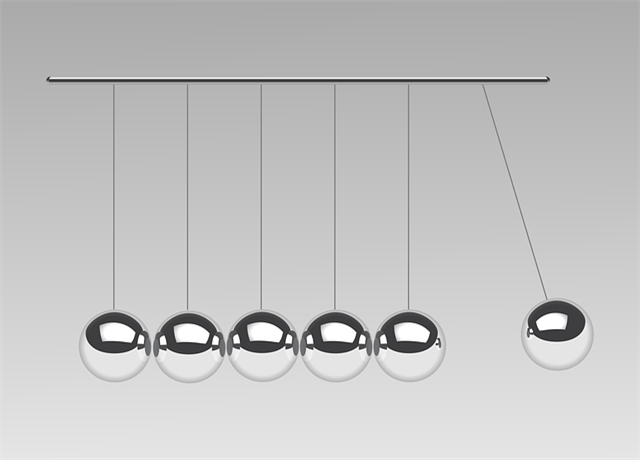
Маятник Ньютона устроен так, что начальный шар передаёт импульс второму шарику, а затем замирает. Нашему глазу на первый взгляд не заметно, как следующий шарик принимает импульс от предыдущего, мы не можем проследить его скорость. Но, если взглянуть пристальнее, можно заметить, как шарик немножко «вздрагивает». Это объясняется тем, что он совершает движения с посланной ему скоростью, но поскольку расстояние очень маленькое, ему некуда разогнаться, то он может на своём коротком пути передать импульс третьему шарику и в итоге остановиться. Такое же действие совершает и следующий шарик и т. д. Последнему шарику некуда передавать свой импульс, поэтому он свободно колеблется, поднимаясь на определённую высоту, а затем возвращается, и весь процесс передачи импульсов повторяется в обратном порядке.
4. Виды взаимодействий (Удары)
В механике одним из видов взаимодействия между телами являются соударения, или удары.
Удар — толчок, кратковременное взаимодействие тел, при котором происходит перераспределение кинетической энергии. В физике под ударом понимают такой тип взаимодействия движущихся тел, при котором временем взаимодействия можно пренебречь.
💡 Обрати внимание!
При ударе выполняется закон сохранения импульса. Предполагается, что на время удара действием внешних сил можно пренебречь. Тогда полный импульс тел при ударе сохраняется. В противном случае нужно учитывать импульс внешних сил. Часть энергии обычно уходит на нагрев тел и звук.
Результат столкновения двух тел можно полностью рассчитать, если известно их движение до удара и механическая энергия после удара. Если не известны потери энергии, происходит одновременное столкновение нескольких тел или столкновение точечных частиц, то определить однозначно движение тел после удара невозможно. В общем случае решение задачи о столкновении, кроме знания начальных скоростей, требует дополнительных параметров.
Абсолютно упругий удар
Абсолютно упругий удар — модель соударения, при которой полная кинетическая энергия системы сохраняется. В классической механике при этом пренебрегают деформациями тел. Соответственно, считается, что энергия на деформации не теряется, а взаимодействие распространяется по всему телу мгновенно.
Пример: хорошей моделью абсолютно упругого удара является столкновение бильярдных шаров или упругих мячиков.
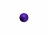
Математическая модель абсолютно упругого удара работает примерно следующим образом:
- Есть в наличии два абсолютно твёрдых тела, которые сталкиваются.
- В точке контакта происходят упругие деформации. Кинетическая энергия движущихся тел мгновенно и полностью переходит в энергию деформации.
- В следующий момент деформированные тела принимают свою прежнюю форму, а энергия деформации полностью обратно переходит в кинетическую энергию.
- Контакт тел прекращается, и они продолжают движение.
Для математического описания простейших абсолютно упругих ударов используется закон сохранения энергии:
а также закон сохранения импульса:
💡 Обрати внимание!
Импульсы складываются векторно, а энергии — скалярно.
Примеры частных случаев упругих ударов и их результаты:
1. Абсолютно упругий удар тел равных масс (покоящегося и движущегося).


2. Абсолютно упругий удар двух тел разных масс.


3. Абсолютно упругий удар тел равных масс, но с различными направлениями и модулями скоростей (движутся навстречу).


4. Абсолютно упругий удар тел равных масс (движутся в одном направлении).


Абсолютно неупругий удар
Абсолютно неупругий удар — удар, в результате которого тела соединяются и продолжают дальнейшее своё движение как единое тело.
Пример: абсолютно неупругий удар тел равных масс (покоящегося и движущегося).


Общая скорость тел после неупругого удара может быть найдена из закона сохранения импульса:
💡 Обрати внимание!
Импульсы являются величинами векторными, поэтому складываются только векторно. Как и при любом ударе, при абсолютно неупругом ударе выполняется закон сохранения импульса и закон сохранения момента импульса, но не выполняется закон сохранения механической энергии. Часть кинетической энергии соударяемых тел в результате неупругих деформаций переходит в тепловую.
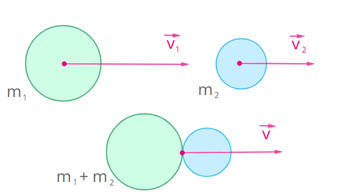
5. Реактивное движение. Ракеты
Пример: характер движения воздушного шарика, отпущенного с возможностью выпускать воздух через узкое отверстие, отличается скоростью движения, траекторией полёта и источником энергии движения.
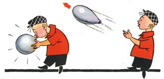
Какова механика полёта шарика? Надувая шарик, мы создаем в нем повышенное давление. Потом завязываем отверстие ниткой, чтобы воздух не выходил. В этот момент времени шарик и воздух в нем находятся в покое. Следовательно, суммарный импульс системы шарик-воздух равен нулю:
Если развязать нитку, воздух начнет выходить из шарика с некоторой скоростью. Значит, мы можем говорить об импульсе выходящего воздуха. Направление импульса совпадает с направлением движения воздуха.
При выполнении закона сохранения импульса общий импульс системы тел шарик-воздух не должен измениться (т.е. должен быть равен нулю):
Чтобы выполнялось это условие, воздух движется в одну сторону, а шарик — в противоположную, причем их скорости таковы, что модули импульса воздушной струи и шарика равны.
Векторы импульсов шарика и воздушной струи совпадают с направлениями векторов скоростей. Векторы скоростей, а следовательно и импульсов, направлены в противоположные стороны. В результате равенства модулей и противоположности направлений, суммарный импульс воздушной струи и шарика остаётся равным нулю, т.е. таким же, как и до начала движения.
Данная демонстрация движения шарика при истечении из него потока воздуха является примером реактивного движения. Направление скорости движения воздуха противоположно направлению скорости движения самого шарика, поэтому импульс шарика противоположен импульсу воздушной струи.
Реактивное движение — это движение, которое возникает при отделении от тела некоторой его части с определённой скоростью.
Вращение устройства, показанного на рисунке, основано на реактивном движении в жидкости.
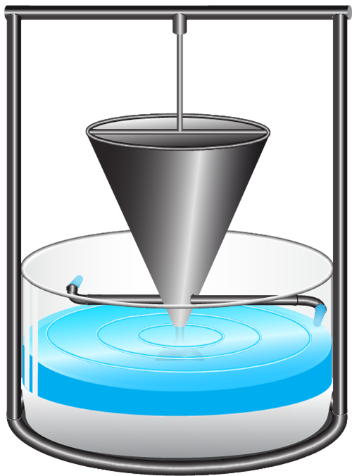
По сообщающимся с сосудом изогнутым трубкам вытекает вода. Струя из трубки ударяет в стенку поддона или просто с большим давлением бьет из трубки. За счет отбрасывания воды трубка движется в противоположную сторону и сосуд вращается. Такой пример показывает, что для реактивного движения можно использовать не только газ, но и жидкость. Многие морские существа пользуются реактивным движением: кальмары, осьминоги, каракатицы.
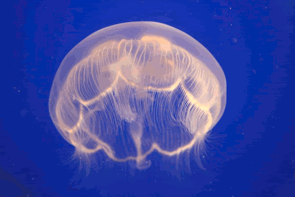
Например, кальмар засасывает воду в мантийную полость, а затем резко выталкивает струю воды через воронку. Надо отметить тот факт, что тело кальмара своими внешними формами сходно с ракетой.
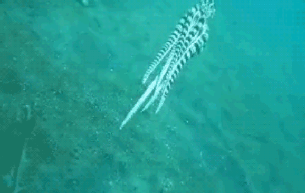
Реактивное движение в природе можно проиллюстрировать и примерами из мира растений.
Бешеный огурец (лат. Ecballium elaterium через др.-греч. ἐκβάλλω — «выбрасываю») известен свойством выстреливать семенами на расстояние более 6 м. Это происходит из-за высокого давления внутри плода.

Из истории изобретения ракет
Наблюдая реактивное движение в природе, учёные изобретали реактивные двигатели, которые сначала применялись для развлечения, для использования в военном деле, позже — для водного, воздушного и космического транспорта.
Реактивные двигатели эффективны там, где нет среды, опоры для передвижения. Чтобы изменять своё положение в пространстве, телу необходима точка опоры либо сила, которая придаст импульс. В безвоздушном пространстве импульс можно получить только от энергии реактивного движения. Ракета (от итал. rocchetta — маленькое веретено, через нем. Rakete или нидерл. raket) — аппарат, двигающийся за счёт реактивной силы вследствие отброса рабочего тела аппарата без использования вещества окружающей среды.
Ракета была известна давно. Очевидно, она появилась много веков назад на Востоке, возможно, в Древнем Китае — родине пороха. Ракеты использовали во время народных празднеств, устраивали фейерверки, зажигали в небе огненные дожди, фонтаны, колёса.
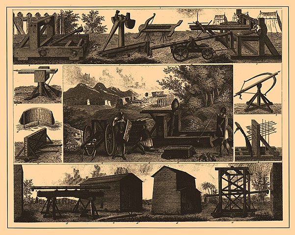
Ракеты применяли в военном деле. Долгое время ракета была одновременно и оружием, и игрушкой. В начале XVII века в «Уставе ратных, пушечных и других дел, касающихся до военной науки» подробное описание русских ракет дано пушечным мастером Онисимом Михайловым. В 1680 году в Москве учреждено первое «ракетное заведение». В лабораториях изготавливали порох для ракет и отдельные их части. В 1717 году на вооружение русской армии принята сигнальная ракета в один фунт, которая поднималась на 1 километр.
В фантастических рассказах писатели предлагали использовать ракету для быстрого передвижения по воздуху. В России первым изобретателем ракет был Николай Иванович Кибальчич, химик, изобретатель. Для покушения на императора России Александра II изобрёл летательные снаряды с «летучим студнем», за что был арестован и приговорён к смертной казни.
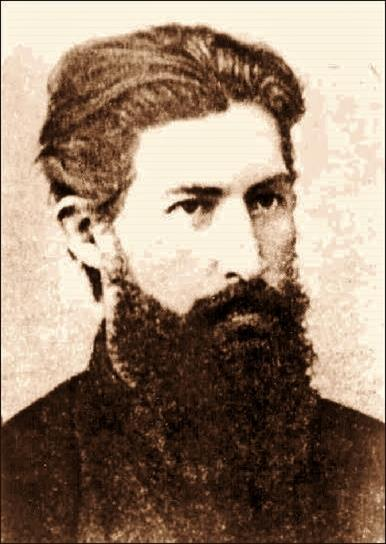
«Находясь в заключении за несколько дней до своей смерти, я пишу этот проект. Я верю в осуществимость моей идеи и эта вера поддерживает меня в моем ужасном положении. Если же моя идея после тщательного обсуждения учеными специалистами будет признана исполнимой, то я буду счастлив тем, что окажу огромную услугу Родине и человечеству».
Проект датирован 23 марта 1881 года. На следующий день Николай Кибальчич передал его своему адвокату В. Н. Герарду. Совет учёных не проводил экспертизу проекта. Записи отправили в секретный архив.
Про свой аппарат он написал: «Если цилиндр поставлен закрытым дном кверху, то при известном давлении газов <...> цилиндр должен подняться наверх».
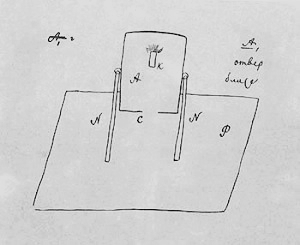
Какая же сила применима к воздухоплаванию? — ставит вопрос Н. И. Кибальчич и отвечает: — Такой силой, по моему мнению, являются медленно горящие взрывчатые вещества... Применить энергию газов, образующихся при воспламенении взрывчатых веществ, к какой-либо продолжительной работе возможно только под тем условием, если та громадная энергия, которая образуется при горении взрывчатых веществ, будет образовываться не сразу, а в течение более или менее продолжительного промежутка времени. Если мы возьмём фунт зернистого пороху, вспыхивающего при зажигании мгновенно, спрессуем его под большим давлением в форму цилиндра, то увидим, что горение не сразу охватит цилиндр, а будет распространяться довольно медленно от одного конца к другому и с определённой скоростью... На этом свойстве прессованного пороха основано устройство боевых ракет.
В мае 1903 года русский учёный Константин Эдуардович Циолковский публикует статью «Исследование мировых пространств реактивными приборами», где представлена конструкция космической ракеты, действующей на жидкостном реактивном двигателе.
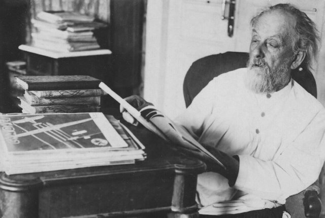
К. Э. Циолковский не только разработал теорию движения космических ракет, но и вывел математическую формулу для расчёта скорости ракеты.
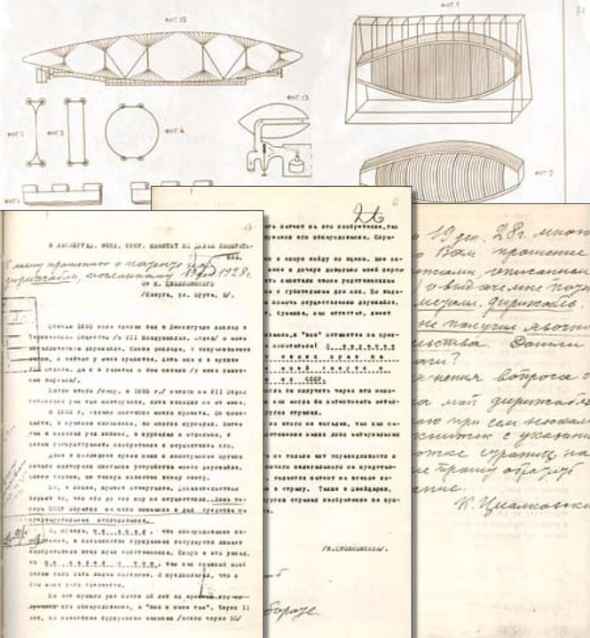
Устройство и принцип работы ракеты
Существуют ракеты для вывода в космос искусственных спутников (обеспечивающих мобильную связь, навигацию, мониторинг поверхности Земли и т. п.), автоматических межпланетных станций и т. д.
Большую часть ракеты занимает топливо и окислитель. Для сгорания топлива необходим кислород (как известно в космосе его нет), поэтому для поддержания горения и необходим окислитель. Насосы подают топливо и окислитель в камеру сгорания. Горение топлива создаёт горячий газ с большим значением давления и скорости. Сопло ракеты направлено так, что газ вырывается противоположно направления её движения, тем самым придавая импульс ракете.
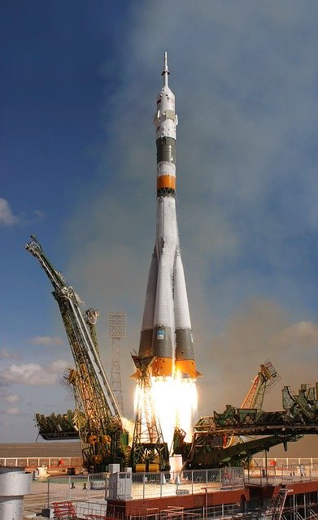
Это можно показать с помощью закона сохранения импульса. Для упрощения расчёта параметров полёта не учитывают силы земного притяжения. Начальный импульс ракеты до старта равен нулю. Поэтому суммарный импульс движущейся ракеты и испускаемого газа тоже равен нулю. Это возможно только в противоположно направленном движении оболочки ракеты и струи газа:
или
Получим следующее. Скорость оболочки прямо пропорциональна скорости газа, выходящего из сопла и обратно пропорциональна массе оболочки:
Многоступенчатые ракеты
Современные ракеты имеют многоступенчатое строение. Для дальних полётов применяется поэтапное использование топлива.
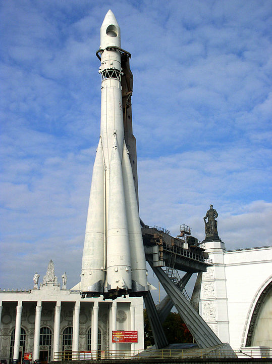
При сгорании топлива в первой ступени она оказывается не нужной и отстреливается. После этого начинает работать двигатель второй ступени, расходуя свое топливо и окислитель. Затем отбрасывается и вторая ступень ракеты. Такой процесс позволяет экономить топливо, т. к. масса ракеты при отбрасывании ступени уменьшается. Это, в свою очередь, позволяет увеличить скорость ракеты (см. формулы).
Полёт трёхступенчатой ракеты:
- Двигатель 1 ступени работает около 3 минут. За это время ракета пролетает более 50 км.
- Израсходовав всё топливо, 1 ступень отделяется от ракеты, и начинает работать двигатель 2 ступени (около 2 минут).
- 3 ступень работает примерно 12 минут и выводит спутник на околоземную орбиту на высоту около 320 км.
Если полёт запланирован в один конец, то третья ступень используется для ускорения летательного аппарата. Для летательных аппаратов с посадкой на Землю последняя ступень сохраняется для торможения в атмосфере планеты. Двигатели разворачивают соплом в направлении падения. Импульс горящего газа, направленный против скорости движения, оказывает тормозящее действие. Скорость посадки снижается.
6. Механическая работа
Совершённая работа равна изменению энергии, потраченной на совершение работы.
Величину работы можно определить, вычитая из конечного значения энергии начальное значение энергии.
Работу, как и энергию, измеряют в джоулях (Дж).
Если энергия тела увеличивается, тогда общая совершённая работа является положительной.
Пример: когда автомобиль начинает двигаться, его кинетическая энергия увеличивается. Значит, двигатель автомобиля совершает положительную работу.
Если энергия тела уменьшается, тогда общая совершённая работа является отрицательной.
Пример: когда автомобиль свободно катится по горизонтальной поверхности, его скорость и кинетическая энергия уменьшаются. Значит, сила сопротивления совершает отрицательную работу.
В физике рассматривают физическую работу, которая связана с перемещением тел. Если при прямолинейном движении на тело действует неизменная сила, направленная в сторону движения тела, тогда работа, произведённая приложенной силой, равна произведению величины силы на величину проделанного перемещения.
Если к телу приложена сила под вертикальным углом к направлению движения тела, как это показано на рисунке, тогда величина совершённой работы зависит от:
- величины приложенной силы (F), которая совершает работу;
- расстояния (l), на которое перемещается тело;
- угла α между направлением действия силы и направлением движения тела.
Работа определяется по формуле:
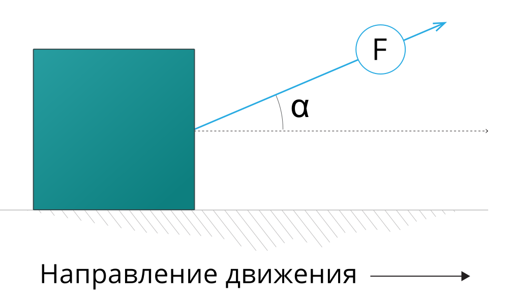
💡 Обрати внимание!
Если сила направлена параллельно направлению перемещения, тогда угол α = 0, а косинус угла α равен 1. В этом случае формула упрощается:
Если проделанный путь является прямолинейным, тогда вместо пути l можно использовать перемещение (s). В этом случае формула для расчёта работы приобретает такой вид:
На трёх рисунках изображены случаи, когда направление силы и направление движения тела совпадают.
1. Действие силы и направление движения тела направлены горизонтально. Например, автомобиль едет по прямому пути, и сила тяги автомобиля приложена в том же направлении.
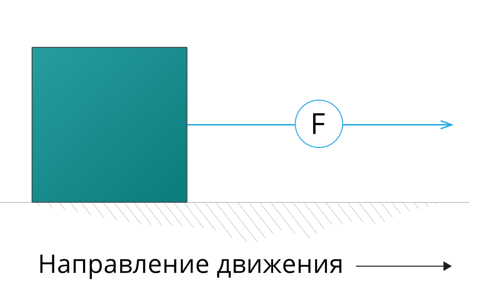
2. Действие силы и направление движения тела направлены под одинаковым углом наклона по отношению к горизонту. Например, автомобиль едет в гору.
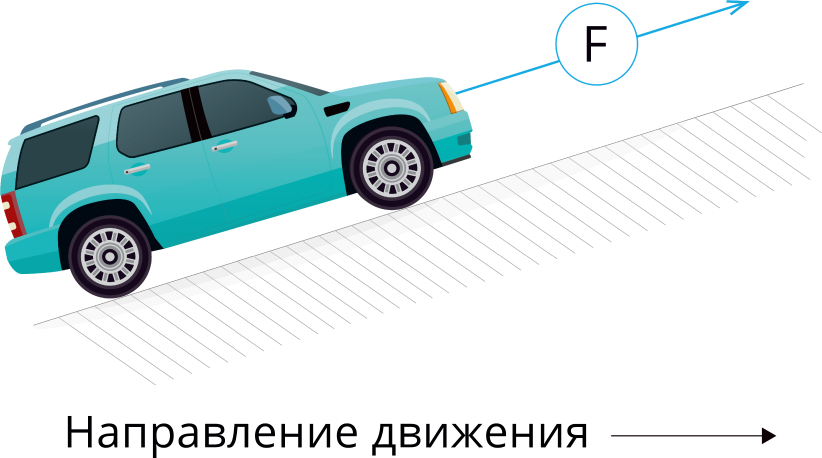
3. Действие силы и направление движения тела направлены вертикально. Например, груз поднимается вверх, и сила упругости троса тоже направлена вверх. В этом случае величину совершённой работы можно рассчитать также по формуле:
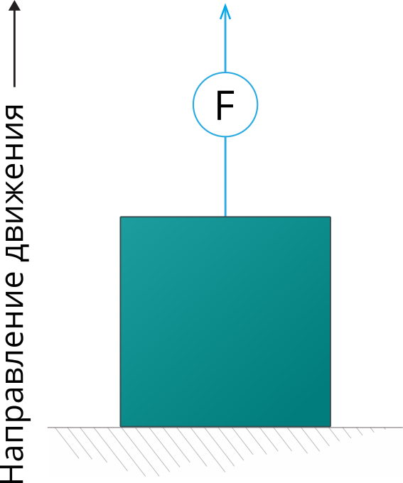
💡 Обрати внимание!
Если направление действия силы противоположно направлению движения, тогда совершаемая этой силой работа отрицательна.
Работа отрицательна, так как функция косинус в интервале значений угла 90–180° является отрицательной. Таким образом, любая работа, совершённая силой трения или сопротивления, является отрицательной.
Пример: когда автомобиль едет с равномерной скоростью по прямой дороге, как это показано на рисунке, работа силы тяги автомобиля является положительной, а работа силы сопротивления равна по величине, но является отрицательной. В результате этого кинетическая и потенциальная энергия автомобиля остаются неизменными.
Если сила направлена прямо противоположно направлению движения, тогда работу вычисляют по формуле:
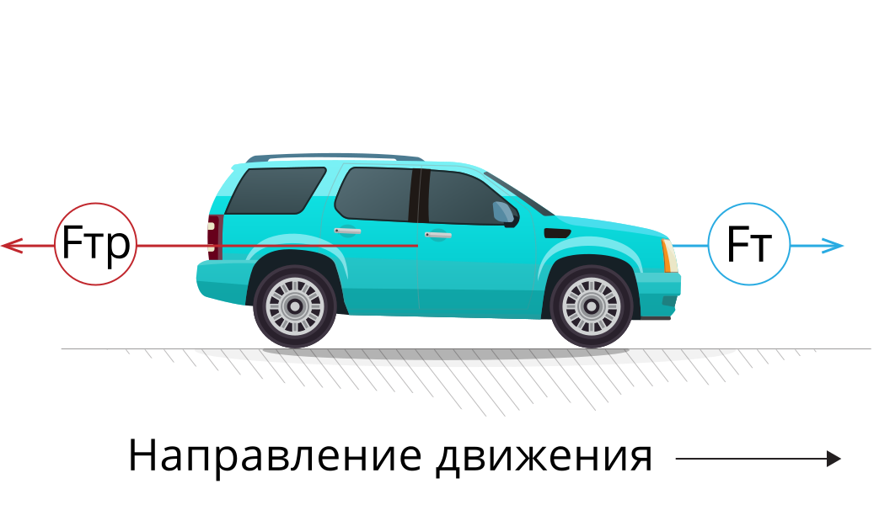
7. Работа силы тяжести
Для определения работы силы тяжести рассмотрим два случая:
- мяч летит вниз с некоторой высоты;
- мяч бросают вверх с некоторой высоты.
Случай 1. Мяч летит с некоторой высоты вниз
Схематично изобразим ситуацию (см. рис. 38).
Пусть:
- h1 — координата мячика в начале наблюдения;
- h2 — координата мячика в последующий момент времени;
- s = h1 − h2 — модуль перемещения мяча;
- Fтяж = mg — сила тяжести, которая действует на протяжении всего движения (полёта) мяча и направлена вниз.
Запишем формулу механической работы в общем виде:
Проанализируем её с учётом случая 1:
- вектор силы тяжести и вектор перемещения совпадают — направлены вниз;
- угол между вектором силы и перемещения равен нулю: ∠α = 0°;
- косинус угла равен 1: cos 0° = 1.
Внесём все данные в формулу работы силы тяжести и получим следующее:
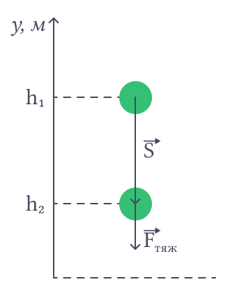
Случай 2. Мяч бросают с некоторой высоты вверх
Схематично изобразим ситуацию (см. рис. 39).
Повторяя рассуждения, как и в случае 1, замечаем, что модуль перемещения s = h2 − h1.
Проанализируем формулу расчёта механической работы для второго случая:
- вектор силы тяжести и вектор перемещения не совпадают: вектор силы направлен вниз, вектор перемещения направлен вверх;
- угол между вектором силы и перемещения равен 180°: ∠α = 180°;
- косинус угла равен −1: cos 180° = −1.
Вносим данные в формулу и получаем:
Формулы работы силы тяжести, полученные для первого и второго случаев, совпадают, что позволяет записать следующее:
Можно показать, что работа силы тяжести не зависит от формы траектории. Для этого рассмотрим рисунок ниже (см. рис. 40). С высоты h1 на высоту h2 мяч может переместиться несколькими способами: летя вертикально вниз (рис. 40а), скатываясь по наклонной плоскости (рис. 40б), двигаясь по кривой (рис. 40в).
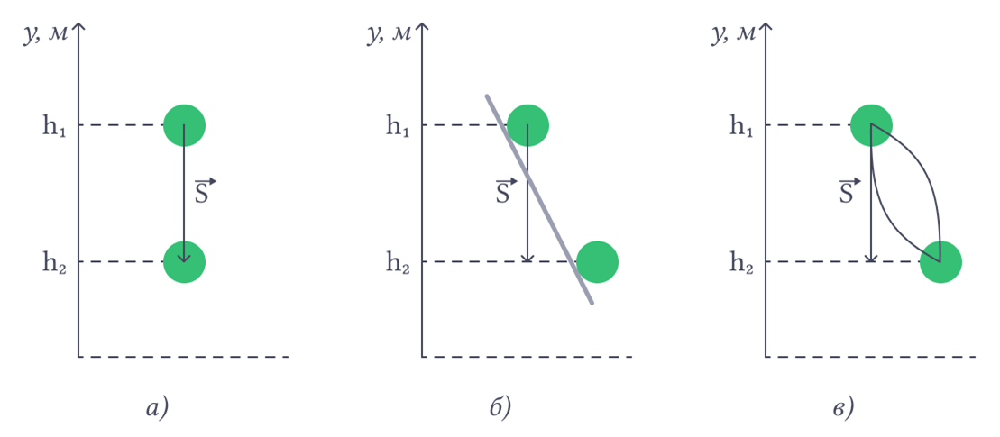
Работа силы тяжести определяется только начальным и конечным положениями тела, то есть не зависит от формы траектории тела. При перемещении тела по замкнутой траектории работа силы тяжести равна нулю.
Консервативные силы — силы, работа которых не зависит от формы траектории точки приложения силы и по замкнутой траектории равна нулю.
💡 Обрати внимание!
Сила тяжести не выполняет работу, когда тело перемещается в горизонтальной плоскости. В таких случаях высота тела относительно земли остаётся постоянной.
Пример: сила тяжести, действующая на птицу, самолёт, стрелу, летящие горизонтально, не совершает работы, или A = 0.
8. Работа силы упругости
Работу силы упругости можно определить только при действии упругой деформации.
Для определения особенностей работы силы упругости рассмотрим следующие случаи:
- после сжатия (действия внешней силы) пружина с грузом возвращается в исходное положение, когда отсутствует деформация;
- после растяжения (действия внешней силы) пружина с грузом возвращается в исходное положение, когда отсутствует деформация.
Случай 1. Пружина с грузом после сжатия возвращается в исходное положение
Схематично покажем на рисунке два положения груза на пружине при отсутствии внешней силы и движении пружины с грузом в недеформированное состояние (рис. 41). Отметим, что вектор силы упругости совпадает с направлением перемещения груза. Кроме того, Fупр1 > Fупр2, так как пружина в первом положении сильнее деформирована, чем во втором положении. Модуль удлинения пружины в первом положении больше, чем во втором положении, т. е. x1 > x2. Точка O означает положение пружины в недеформированном состоянии.
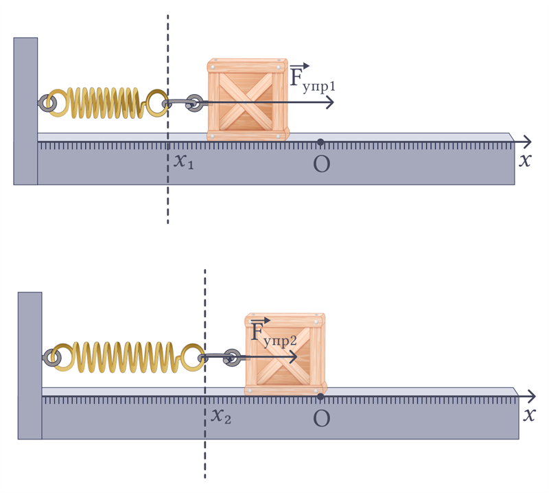
Работу силы упругости удобнее продемонстрировать, используя график зависимости силы упругости от модуля удлинения пружины (рис. 42).
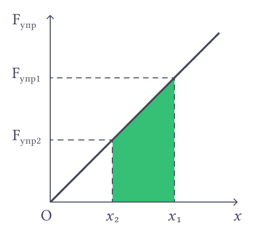
Работа силы упругости есть площадь, ограниченная фигурой. На рисунке фигура закрашена цветом. Она представляет собой трапецию. Площадь трапеции находится как полусумма оснований, умноженная на высоту трапеции.
Внимательно рассмотрим фигуру. Длинами оснований трапеции являются отрезки, соответствующие значениям сил упругости Fупр1 и Fупр2, высота призмы есть разность значений x1 и x2.
Если сила упругости считается по формуле: Fупр1 = kx1, Fупр2 = kx2, где k — коэффициент жёсткости пружины, тогда можно записать формулу работы силы упругости:
Случай 2. Пружина с грузом после растяжения возвращается в исходное положение
Как и в первом случае, покажем на рисунке два положения груза на пружине при отсутствии внешней силы и движении пружины с грузом в недеформированное состояние (рис. 43). В этом случае вектор силы упругости также совпадает с направлением перемещения груза. Кроме того, Fупр1 > Fупр2, так как пружина в первом положении сильнее деформирована, чем во втором положении. Модуль удлинения пружины в первом положении больше, чем во втором положении, т. е. x1 > x2. Точка O означает положение пружины в недеформированном состоянии.
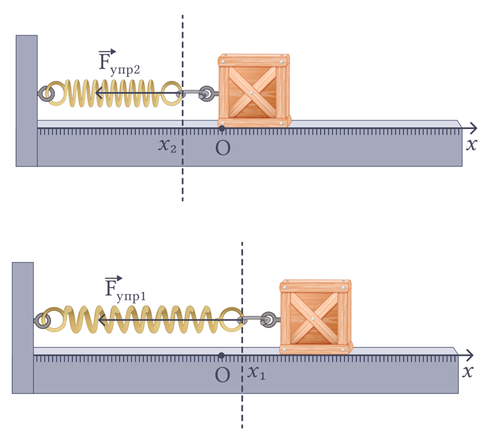
График зависимости силы упругости от модуля удлинения пружины будет схож с таковым в первом случае, тогда формула работы силы упругости принимает тот же вид, что и в первом случае:
В обоих случаях получили одинаковую формулу:
Сила упругости является консервативной.
9. Работа силы трения
Сила трения всегда действует в противоположную сторону по сравнению с направлением движения объекта, как показано на рисунке 44.
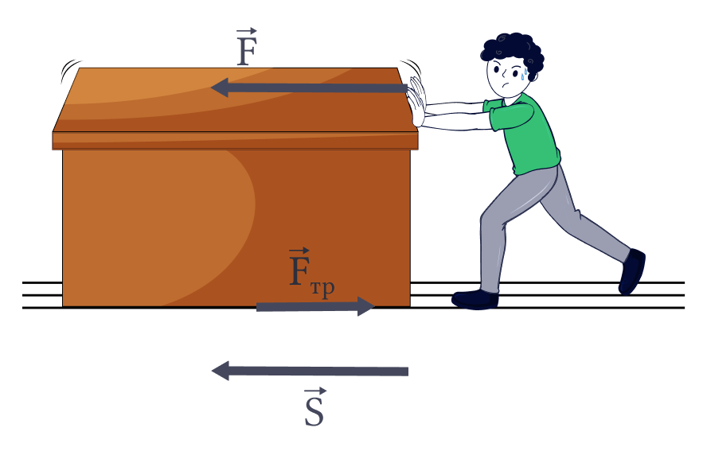
На рисунке 44 отображены различные силы, воздействующие на тело во время его перемещения по поверхности. Поскольку угол между вектором перемещения и вектором силы трения равен 180°, косинус этого угла равен −1.
Исходя из этого, формула для вычисления работы силы трения может быть записана так:
По величине работа, совершённая силой трения, равна работе, проделанной внешней силой.
💡 Обрати внимание!
Силы трения не консервативны. Действительно, работа силы сопротивления воздуха отрицательна при подъёме тела наверх и отрицательна при опускании тела вниз. В итоге на замкнутом пути она будет меньше нуля.
Даже в изолированной системе движущихся тел действуют силы трения и, как следствие, механическая энергия убывает. Именно поэтому постепенно останавливается машина с выключенным двигателем, затихают колебания маятника и т. д.
10. Мощность и коэффициент полезного действия
Мощность по своей сути является скоростью выполнения работы. Чем больше мощность совершаемой работы, тем больше работы выполняется за единицу времени.
Среднее значение мощности — это работа, выполненная за единицу времени.
Величина мощности прямо пропорциональна величине совершённой работы A и обратно пропорциональна времени t, за которое работа была совершена.
Мощность N определяют по формуле:
Единицей измерения мощности в системе СИ является Ватт (русское обозначение — Вт, международное — W).
Для определения мощности двигателя автомобилей и других транспортных средств используют исторически более древнюю единицу измерения — лошадиная сила (л. с.), 1 л. с. = 736 Вт.
Пример: мощность двигателя автомобиля равна примерно 90 л. с. = 66 240 Вт.
Мощность автомобиля или другого транспортного средства можно рассчитать, если известна сила тяги автомобиля F и скорость его движения (v).
Ни одно устройство не способно использовать 100 % от начально подведённой к нему энергии на совершение полезной работы. Поэтому важной характеристикой любого устройства является не только мощность, но и коэффициент полезного действия, который показывает, насколько эффективно используется энергия, подведённая к устройству.
Пример: для того чтобы автомобиль двигался, должны вращаться колёса. А для того чтобы вращались колёса, двигатель должен приводить в движение кривошипно-шатунный механизм. При этом приводятся во вращение шестерни и большая часть энергии выделяется в виде тепла в окружающее пространство, в результате чего происходит потеря подводимой энергии. Коэффициент полезного действия двигателя автомобиля находится в пределах 40–45 %. Таким образом, получается, что только около 40 % от всего бензина, которым заправляют автомобиль, идёт на совершение необходимой нам полезной работы — перемещение автомобиля.
Если мы заправим в бак автомобиля 20 литров бензина, тогда только 8 литров будут расходоваться на перемещение автомобиля, а 12 литров сгорят без совершения полезной работы.
Коэффициент полезного действия (КПД) обозначается буквой греческого алфавита «эта» η, он является отношением полезной мощности N к полной или общей мощности Nполная.
Для его определения используют формулу:
Часто его выражают в процентах. Если коэффициент полезного действия выражают в процентах, тогда используют формулу:
Так как мощность является работой, проделанной за единицу времени, тогда коэффициент полезного действия можно выразить как отношение полезной проделанной работы A к общей или полной проделанной работе Aполная. В этом случае формула для определения коэффициента полезного действия будет выглядеть так:
Коэффициент полезного действия всегда меньше 1, или 100% (η < 1, или η < 100%).
📝 Домашнее задание
Решите задачи в тетради и перенесите ответы в форму.
Тест
1. Как изменится импульс тела, если его скорость увеличится в 2 раза?
2. Какая система тел называется замкнутой?
3. В каком случае работа силы равна нулю?
4. Зависит ли работа силы тяжести от формы траектории?
5. Какая сила является консервативной?
6. По какой формуле рассчитывается мощность?
Задачи
- Задача 1. Найдите импульс тела массой 5 кг, движущегося со скоростью 4 м/с.
- Задача 2. Мяч массой 0,5 кг летит со скоростью 10 м/с. Игрок ловит его. Найдите изменение импульса мяча.
- Задача 3. Два шара массами 2 кг и 3 кг движутся навстречу друг другу со скоростями 2 м/с и 1 м/с. Найдите скорость шаров после абсолютно неупругого удара.
- Задача 4. Ракета массой 1000 кг стартует с Земли. Какую скорость приобретет ракета, если масса мгновенно выброшенных газов составляет 100 кг, а скорость их выброса 500 м/с?
- Задача 5. Ящик тянут по горизонтальной поверхности с силой 100 Н под углом 30° к горизонту. Перемещение составило 5 м. Найдите работу силы тяги.
- Задача 6. Человек поднимает груз массой 10 кг на высоту 2 м. Какую работу он совершает? (g = 10 м/с²).
- Задача 7. Мяч массой 0,2 кг падает с высоты 5 м на землю. Какую работу совершает сила тяжести? (g = 10 м/с²).
- Задача 8. Пружина жёсткостью 200 Н/м сжата на 5 см. Какую работу совершит сила упругости при возвращении пружины в недеформированное состояние?
- Задача 9. Брусок массой 2 кг тащат по горизонтальной поверхности с силой 10 Н. Коэффициент трения равен 0,2. Брусок переместился на 5 м. Найдите работу силы трения. (g = 10 м/с²).
- Задача 10. Подъемный кран поднимает груз массой 2 т на высоту 10 м за 20 секунд. Какую мощность развивает кран? (g = 10 м/с²).
- Задача 11. Тепловоз развивает силу тяги 100 кН и движется со скоростью 72 км/ч. Какую мощность он развивает?